DAVID G. SIMPSON
Personal Web Site
ITALY PHOTO ALBUM: PAGE 3
| 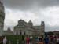 The cathedral in Pisa. | 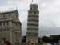 The famous Leaning Tower of Pisa. The Leaning Tower is actually the bell tower for the cathedral complex. | We didn't get to go
inside, but got to right next to it.
|
| 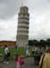 Another view of the Leaning Tower. Everywhere you looked, you saw people posing like the guy in the blue shirt is doing. |
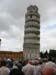 The Leaning Tower of Pisa. |
|
| 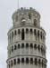 Closeup of the Leaning Tower of Pisa. | 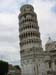 Another view of the Leaning Tower. | |
The Leaning Tower, as seen from the base. |
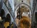 Inside the cathedral. This is Galileo's Pendulum. Galileo once watched this pendulum swinging back and forth, and noticed that the period of oscillation was independent of its amplitude—prompting his study of the physics of pendulums, which later led to the use of pendulums in clocks. |
|
| 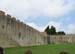 The Pisa city walls. |
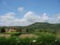 Leaving Pisa, we took the bus on to Lucca. Here is some more Tuscan countryside along the way. |
|
| 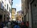 Our tour group arrives in the city of Lucca. |
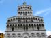 The façade of San Michele in Foro, a bascilica in Lucca . |
{kind=link}
{kind=link}
{kind=link}
{kind=link}
{kind=link}
{kind=link}
{kind=link}
{kind=link}
{kind=link}
{kind=link}
{kind=link}
{kind=link}
| <<< Previous | Page 3 of 5 | Next >>> |
|---|
Contact Information
I may be contacted at: